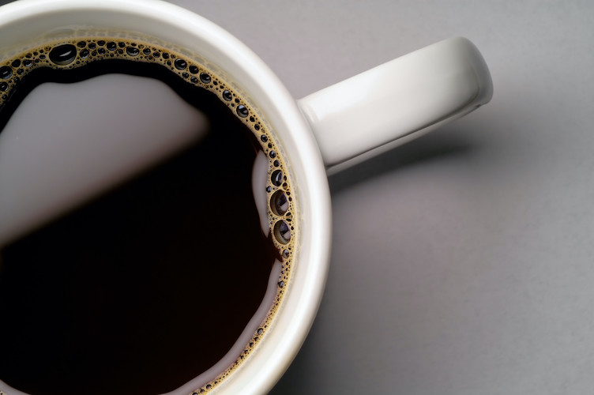

Coffee

Coffee is the best way to start your day. And an incredible treat throughout the day. Anyone who says otherwise is objectively wrong.
Ingredients
- 2 scoops of whole coffee beans
- 3 cups hot water 200 degrees
- coffee grinder
- aero press
Steps
- Grind the coffee
- Place the coffee grounds in the aeropress
- Pour hot water into the aeropress
- Wait 60 seconds before inserting the plunger and pushing it down
- Pour the coffee into your cup and add as much water as you'd like
- Enjoy your hot cup of happiness!